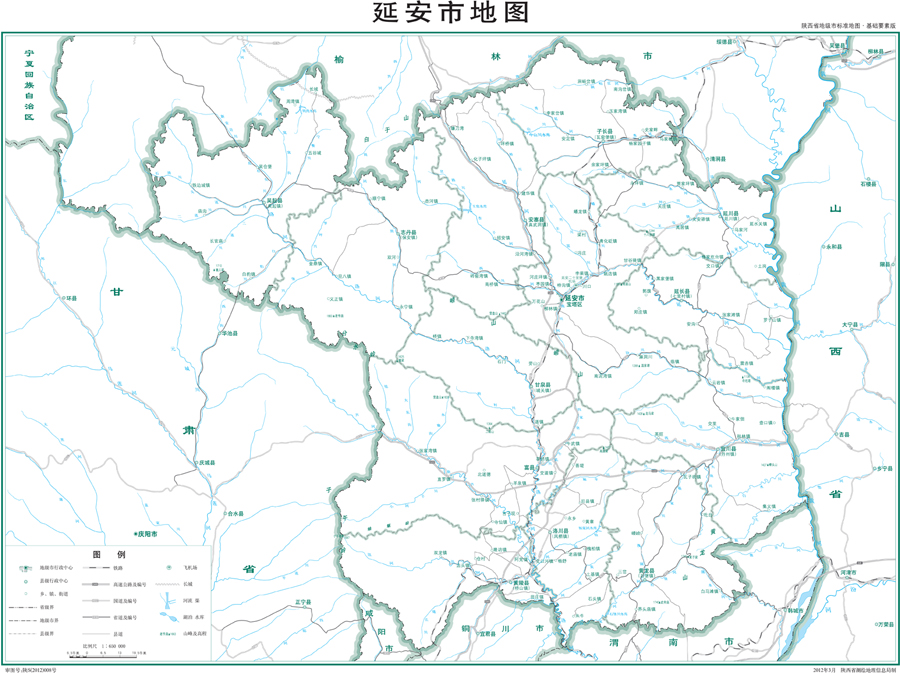
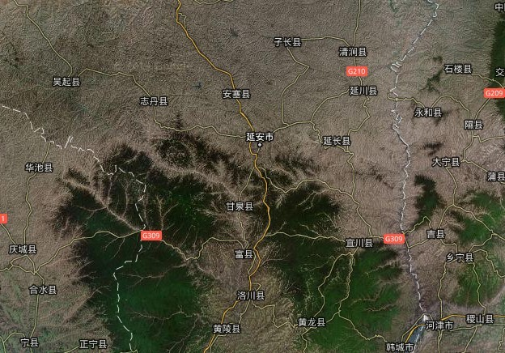
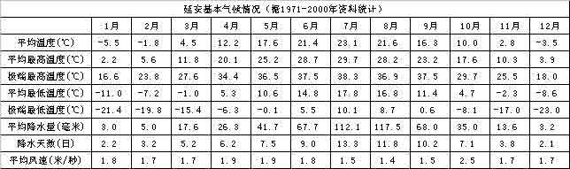

地理状况

天地图·延安
延安位于陕西省北部，地处黄河中游，介于北纬35°21′~37°31′，东经107°41′~110°31′之间,黄土高原的中南地区，西安以北371公里。北连榆林，南接关中咸阳、铜川、渭南三市，东隔黄河与山西临汾、吕梁相望，西邻甘肃庆阳。全市总面积3.7万平方公里。属内陆干旱半干旱气候，四季分明、日照充足、昼夜温差大、年均无霜期170天，年均气温7.7℃~10.6℃，年均日照数2300~2700小时，年均降水量500毫米左右。
地形地貌

延安位于黄河中游，属黄土高原丘陵沟壑区。延安地貌以黄土高原、丘陵为主。地势西北高东南低，平均海拔1200米左右。北部的白于山海拔1600～1800米，最高点在吴旗县五谷城乡的白于山顶，海拔1809.8米；最低点在宜川县集义乡猴儿川，海拔388.8米，相对高差1421米。北部以黄土梁峁、沟壑为主，占全区总面积72％；南部以黄土塬沟壑为主，占总面积19％；全区石质山地占总面积9％。西部子午岭，南北走向，构成洛河与泾河的分水岭，是高出黄土高原的基岩山地之一，海拔1500～1600米，主峰1687米；东部黄龙山，大致呈南北方向延伸，海拔1500米，主峰（大岭）海拔1788.7米；中部劳山，呈西北——东南走向，平均海拔1400米，主峰（大墩梁）海拔1464米。黄龙山和劳山统称为梁山山脉，形成延安地区地形的骨架。
气 候

延安属高原大陆性季风气候，北部属半干旱地区，南部属半湿润地区。冬季寒冷干燥，维持期长；春季气温快升多变，易有霜冻，多大风、风沙、浮尘天气，常有春旱；夏季温热，雨量集中，间有伏旱，多雷阵雨天气，偶有冰雹；秋季气温速降，多雾，早霜出现，有阴雨天气。温度日较差大，全区年平均日较差为10.9～14.9℃，志丹、甘泉最大，洛川最小。一年中，4～6月日较差较大，平均12～17℃；7～9月日较差较小，平均10～13℃。H.H伊万诺夫湿润度在0.41～0.79之间，7～9月大部分地区大于1.0；10月份在0.6～1.0之间；11月至次年6月小于0.6。
一、气温：年平均气温9.9℃,年平均最高气温17.2℃，年平均最低气温4.3℃，最热月（7月）月平均气温23.1℃，最冷月（1月）月平均气温-5.5℃，极端最高气温38.3℃（2000年7月21日），极端最低气温-23.0℃（1991年12月28日）。
二、降水：年降水总量507.7毫米，一日最大降水量为139.9毫米（1981年8月15日），年≥0.1毫米降水日数为80.8天，年≥50毫米降水日数为0.8天，最多年降水量774.0毫米（1981年），最少年降水仅330.0毫米（1974年），降水主要集中在5-9月，月降水量最大值出现在7月，为114.1毫米。
三、日照：年日照时数2448.6小时，以5月最多为247.1小时，2月最少为172.7小时。年日照百分率55%，最大1月为63%，最小7月和9月为50%。
四、风：年平均风速1.7米/秒，最大风速15.0米/秒，风向东东北风（ENE），出现在1983年6月26日；年最多风向为西南风和静风（SW，C）。
五、天气现象日数：大风0.8天；沙尘暴1.2天，主要出现在4月；大雾11.0天，9月最多为3.0天；冰雹1.9天，主要出现在6月；雷暴27.9天，7月最多为8.0天；初霜日10月13日，终霜日4月12日，霜期182.2天。
六、日出日没时刻：春分日出06时47分，日没18时53分；夏至日出05时24分，日没20时04分；秋分日出06时30分，日没18时38分；冬至日出07时50分，日没17时30分。